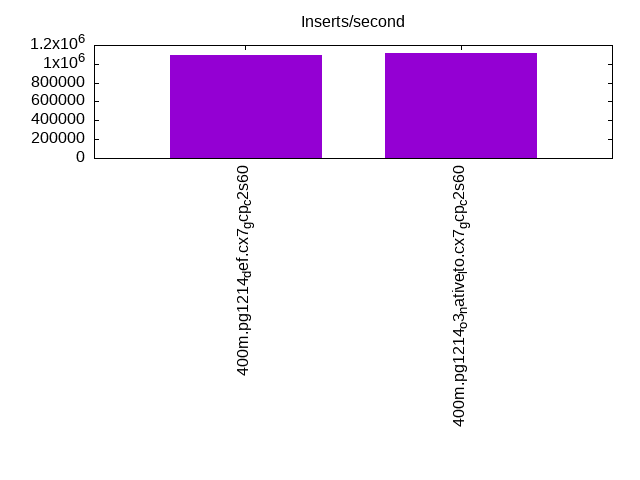
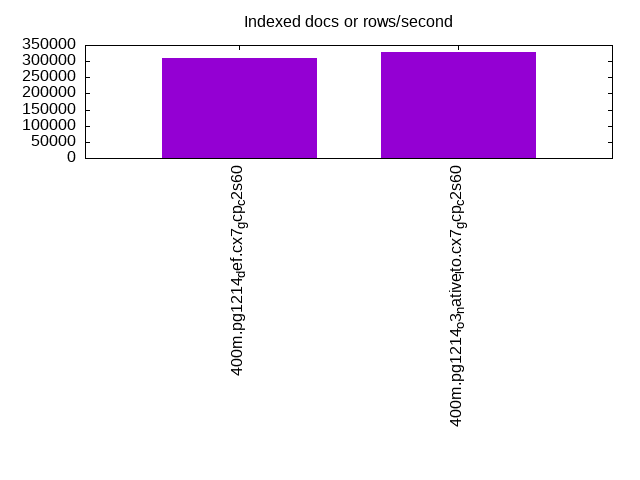
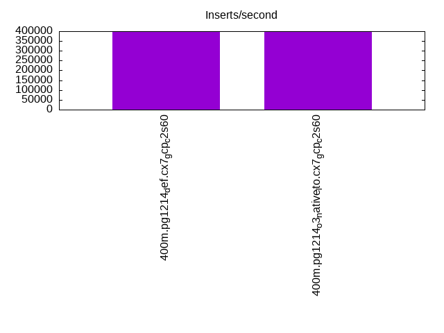
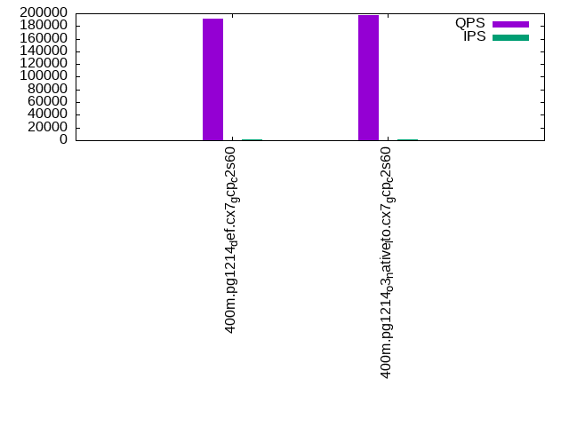
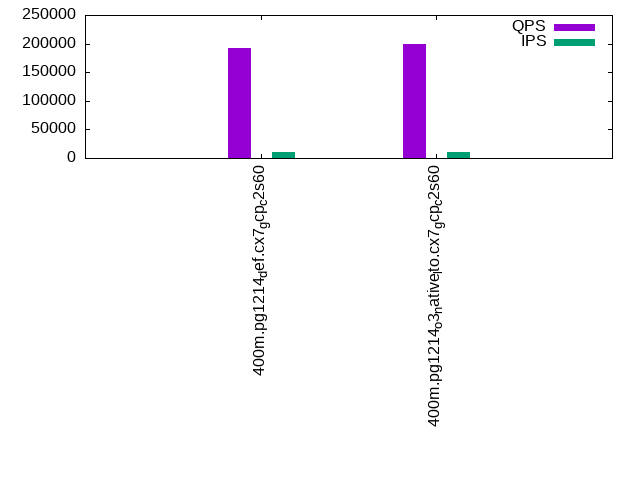
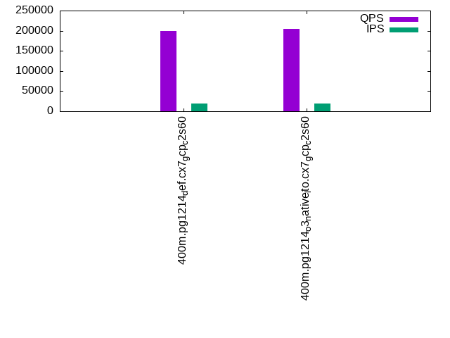

This is a report for the insert benchmark with 400M docs and 20 client(s). It is generated by scripts (bash, awk, sed) and Tufte might not be impressed. An overview of the insert benchmark is here and a short update is here. Below, by DBMS, I mean DBMS+version.config. An example is my8020.c10b40 where my means MySQL, 8020 is version 8.0.20 and c10b40 is the name for the configuration file.
The test server is a c2-standard-60 from GCP with 30 cores, hyperthreading disabled, 240G RAM and 3T from XFS and SW RAID 0 striped over 8 local NVMe drives. The benchmark was run with 20 clients and there were 1 or 2 connections per client (1 for queries, 1 for inserts). The benchmark loads 400M rows without secondary indexes, creates secondary indexes, loads another 400M rows then does 3 read+write tests for one hour each that do queries as fast as possible with 100, 500 and then 1000 writes/second/client concurrent with the queries. Each read-write test runs for 1800 seconds. The test was configured to use one table. The database is cached by the storage engine and the only IO is for writes. Clients and the DBMS share one server. The per-database configs are in the per-database subdirectories here.
The tested DBMS are:
The numbers are inserts/s for l.i0 and l.i1, indexed docs (or rows) /s for l.x and queries/s for q*.2. The values are the average rate over the entire test for inserts (IPS) and queries (QPS). The range of values for IPS and QPS is split into 3 parts: bottom 25%, middle 50%, top 25%. Values in the bottom 25% have a red background, values in the top 25% have a green background and values in the middle have no color. A gray background is used for values that can be ignored because the DBMS did not sustain the target insert rate. Red backgrounds are not used when the minimum value is within 80% of the max value.
| dbms | l.i0 | l.x | l.i1 | q100.1 | q500.1 | q1000.1 |
|---|---|---|---|---|---|---|
| 400m.pg1214_def.cx7_gcp_c2s60 | 1092896 | 310155 | 396040 | 190935 | 192570 | 198761 |
| 400m.pg1214_o3_native_lto.cx7_gcp_c2s60 | 1111111 | 327951 | 398010 | 197494 | 200007 | 205299 |
This lists the average rate of inserts/s for the tests that do inserts concurrent with queries. For such tests the query rate is listed in the table above. The read+write tests are setup so that the insert rate should match the target rate every second. Cells that are not at least 95% of the target have a red background to indicate a failure to satisfy the target.
| dbms | q100.1 | q500.1 | q1000.1 |
|---|---|---|---|
| pg1214_def.cx7_gcp_c2s60 | 1976 | 9885 | 19769 |
| pg1214_o3_native_lto.cx7_gcp_c2s60 | 1977 | 9885 | 19769 |
| target | 2000 | 10000 | 20000 |
l.i0: load without secondary indexes. Graphs for performance per 1-second interval are here.
Average throughput:
Insert response time histogram: each cell has the percentage of responses that take <= the time in the header and max is the max response time in seconds. For the max column values in the top 25% of the range have a red background and in the bottom 25% of the range have a green background. The red background is not used when the min value is within 80% of the max value.
| dbms | 256us | 1ms | 4ms | 16ms | 64ms | 256ms | 1s | 4s | 16s | gt | max |
|---|---|---|---|---|---|---|---|---|---|---|---|
| pg1214_def.cx7_gcp_c2s60 | 18.689 | 78.103 | 3.158 | 0.012 | 0.021 | 0.016 | 0.752 | ||||
| pg1214_o3_native_lto.cx7_gcp_c2s60 | 25.467 | 71.174 | 3.311 | 0.009 | 0.025 | 0.015 | 0.729 |
Performance metrics for the DBMS listed above. Some are normalized by throughput, others are not. Legend for results is here.
ips qps rps rmbps wps wmbps rpq rkbpq wpi wkbpi csps cpups cspq cpupq dbgb1 dbgb2 rss maxop p50 p99 tag 1092896 0 0 0.0 1703.6 413.1 0.000 0.000 0.002 0.387 288881 58.5 0.264 16 43.0 112.2 0.0 0.752 60665 6293 400m.pg1214_def.cx7_gcp_c2s60 1111111 0 0 0.0 1785.1 427.3 0.000 0.000 0.002 0.394 308509 57.4 0.278 15 43.0 112.3 0.0 0.729 61833 12986 400m.pg1214_o3_native_lto.cx7_gcp_c2s60
l.x: create secondary indexes.
Average throughput:
Performance metrics for the DBMS listed above. Some are normalized by throughput, others are not. Legend for results is here.
ips qps rps rmbps wps wmbps rpq rkbpq wpi wkbpi csps cpups cspq cpupq dbgb1 dbgb2 rss maxop p50 p99 tag 310155 0 1478 18.2 609.9 124.6 0.005 0.060 0.002 0.411 1430 3.3 0.005 3 78.3 148.3 0.0 0.002 NA NA 400m.pg1214_def.cx7_gcp_c2s60 327951 0 1654 19.8 650.3 129.4 0.005 0.062 0.002 0.404 1882 3.3 0.006 3 78.3 153.5 0.0 0.002 NA NA 400m.pg1214_o3_native_lto.cx7_gcp_c2s60
l.i1: continue load after secondary indexes created. Graphs for performance per 1-second interval are here.
Average throughput:
Insert response time histogram: each cell has the percentage of responses that take <= the time in the header and max is the max response time in seconds. For the max column values in the top 25% of the range have a red background and in the bottom 25% of the range have a green background. The red background is not used when the min value is within 80% of the max value.
| dbms | 256us | 1ms | 4ms | 16ms | 64ms | 256ms | 1s | 4s | 16s | gt | max |
|---|---|---|---|---|---|---|---|---|---|---|---|
| pg1214_def.cx7_gcp_c2s60 | 94.579 | 4.326 | 1.057 | 0.024 | 0.013 | 0.879 | |||||
| pg1214_o3_native_lto.cx7_gcp_c2s60 | 94.561 | 4.407 | 0.992 | 0.026 | 0.013 | 0.865 |
Performance metrics for the DBMS listed above. Some are normalized by throughput, others are not. Legend for results is here.
ips qps rps rmbps wps wmbps rpq rkbpq wpi wkbpi csps cpups cspq cpupq dbgb1 dbgb2 rss maxop p50 p99 tag 396040 0 3063 27.9 2357.4 389.8 0.008 0.072 0.006 1.008 259388 54.0 0.655 41 170.2 296.8 0.0 0.879 24373 1948 400m.pg1214_def.cx7_gcp_c2s60 398010 0 2999 27.8 2466.9 390.4 0.008 0.072 0.006 1.004 277376 53.3 0.697 40 170.2 305.6 0.0 0.865 24473 1848 400m.pg1214_o3_native_lto.cx7_gcp_c2s60
q100.1: range queries with 100 insert/s per client. Graphs for performance per 1-second interval are here.
Average throughput:
Query response time histogram: each cell has the percentage of responses that take <= the time in the header and max is the max response time in seconds. For max values in the top 25% of the range have a red background and in the bottom 25% of the range have a green background. The red background is not used when the min value is within 80% of the max value.
| dbms | 256us | 1ms | 4ms | 16ms | 64ms | 256ms | 1s | 4s | 16s | gt | max |
|---|---|---|---|---|---|---|---|---|---|---|---|
| pg1214_def.cx7_gcp_c2s60 | 99.973 | 0.020 | 0.006 | 0.001 | nonzero | 0.026 | |||||
| pg1214_o3_native_lto.cx7_gcp_c2s60 | 99.975 | 0.018 | 0.006 | 0.001 | nonzero | 0.023 |
Insert response time histogram: each cell has the percentage of responses that take <= the time in the header and max is the max response time in seconds. For max values in the top 25% of the range have a red background and in the bottom 25% of the range have a green background. The red background is not used when the min value is within 80% of the max value.
| dbms | 256us | 1ms | 4ms | 16ms | 64ms | 256ms | 1s | 4s | 16s | gt | max |
|---|---|---|---|---|---|---|---|---|---|---|---|
| pg1214_def.cx7_gcp_c2s60 | 96.664 | 2.686 | 0.642 | 0.008 | 0.072 | ||||||
| pg1214_o3_native_lto.cx7_gcp_c2s60 | 98.608 | 1.206 | 0.186 | 0.040 |
Performance metrics for the DBMS listed above. Some are normalized by throughput, others are not. Legend for results is here.
ips qps rps rmbps wps wmbps rpq rkbpq wpi wkbpi csps cpups cspq cpupq dbgb1 dbgb2 rss maxop p50 p99 tag 1976 190935 0 0.0 2853.1 62.9 0.000 0.000 1.444 32.614 682101 62.9 3.572 99 171.0 272.4 0.0 0.026 9557 9210 400m.pg1214_def.cx7_gcp_c2s60 1977 197494 0 0.0 2772.4 79.9 0.000 0.000 1.402 41.384 703046 63.0 3.560 96 171.1 293.7 0.0 0.023 9850 9494 400m.pg1214_o3_native_lto.cx7_gcp_c2s60
q500.1: range queries with 500 insert/s per client. Graphs for performance per 1-second interval are here.
Average throughput:
Query response time histogram: each cell has the percentage of responses that take <= the time in the header and max is the max response time in seconds. For max values in the top 25% of the range have a red background and in the bottom 25% of the range have a green background. The red background is not used when the min value is within 80% of the max value.
| dbms | 256us | 1ms | 4ms | 16ms | 64ms | 256ms | 1s | 4s | 16s | gt | max |
|---|---|---|---|---|---|---|---|---|---|---|---|
| pg1214_def.cx7_gcp_c2s60 | 99.913 | 0.057 | 0.027 | 0.003 | nonzero | nonzero | 0.109 | ||||
| pg1214_o3_native_lto.cx7_gcp_c2s60 | 99.919 | 0.052 | 0.026 | 0.003 | nonzero | 0.032 |
Insert response time histogram: each cell has the percentage of responses that take <= the time in the header and max is the max response time in seconds. For max values in the top 25% of the range have a red background and in the bottom 25% of the range have a green background. The red background is not used when the min value is within 80% of the max value.
| dbms | 256us | 1ms | 4ms | 16ms | 64ms | 256ms | 1s | 4s | 16s | gt | max |
|---|---|---|---|---|---|---|---|---|---|---|---|
| pg1214_def.cx7_gcp_c2s60 | 51.757 | 28.010 | 19.903 | 0.326 | 0.004 | 0.284 | |||||
| pg1214_o3_native_lto.cx7_gcp_c2s60 | 51.870 | 27.890 | 19.893 | 0.342 | 0.005 | 0.334 |
Performance metrics for the DBMS listed above. Some are normalized by throughput, others are not. Legend for results is here.
ips qps rps rmbps wps wmbps rpq rkbpq wpi wkbpi csps cpups cspq cpupq dbgb1 dbgb2 rss maxop p50 p99 tag 9885 192570 0 0.0 4865.2 155.6 0.000 0.000 0.492 16.122 673508 63.9 3.497 100 175.9 244.8 0.0 0.109 9590 9130 400m.pg1214_def.cx7_gcp_c2s60 9885 200007 0 0.0 4794.9 156.4 0.000 0.000 0.485 16.204 697274 63.8 3.486 96 176.0 257.7 0.0 0.032 9893 9477 400m.pg1214_o3_native_lto.cx7_gcp_c2s60
q1000.1: range queries with 1000 insert/s per client. Graphs for performance per 1-second interval are here.
Average throughput:
Query response time histogram: each cell has the percentage of responses that take <= the time in the header and max is the max response time in seconds. For max values in the top 25% of the range have a red background and in the bottom 25% of the range have a green background. The red background is not used when the min value is within 80% of the max value.
| dbms | 256us | 1ms | 4ms | 16ms | 64ms | 256ms | 1s | 4s | 16s | gt | max |
|---|---|---|---|---|---|---|---|---|---|---|---|
| pg1214_def.cx7_gcp_c2s60 | 99.865 | 0.094 | 0.037 | 0.004 | nonzero | 0.038 | |||||
| pg1214_o3_native_lto.cx7_gcp_c2s60 | 99.869 | 0.091 | 0.037 | 0.004 | nonzero | nonzero | 0.146 |
Insert response time histogram: each cell has the percentage of responses that take <= the time in the header and max is the max response time in seconds. For max values in the top 25% of the range have a red background and in the bottom 25% of the range have a green background. The red background is not used when the min value is within 80% of the max value.
| dbms | 256us | 1ms | 4ms | 16ms | 64ms | 256ms | 1s | 4s | 16s | gt | max |
|---|---|---|---|---|---|---|---|---|---|---|---|
| pg1214_def.cx7_gcp_c2s60 | 61.249 | 25.870 | 12.569 | 0.313 | 0.233 | ||||||
| pg1214_o3_native_lto.cx7_gcp_c2s60 | 60.416 | 26.150 | 13.099 | 0.335 | nonzero | 0.273 |
Performance metrics for the DBMS listed above. Some are normalized by throughput, others are not. Legend for results is here.
ips qps rps rmbps wps wmbps rpq rkbpq wpi wkbpi csps cpups cspq cpupq dbgb1 dbgb2 rss maxop p50 p99 tag 19769 198761 0 0.0 4373.1 213.2 0.000 0.000 0.221 11.043 666664 65.4 3.354 99 189.4 253.7 0.0 0.038 9817 9158 400m.pg1214_def.cx7_gcp_c2s60 19769 205299 0 0.0 4435.9 218.3 0.000 0.000 0.224 11.307 688133 65.4 3.352 96 189.4 259.9 0.0 0.146 10261 9526 400m.pg1214_o3_native_lto.cx7_gcp_c2s60
l.i0: load without secondary indexes
Performance metrics for all DBMS, not just the ones listed above. Some are normalized by throughput, others are not. Legend for results is here.
ips qps rps rmbps wps wmbps rpq rkbpq wpi wkbpi csps cpups cspq cpupq dbgb1 dbgb2 rss maxop p50 p99 tag 1092896 0 0 0.0 1703.6 413.1 0.000 0.000 0.002 0.387 288881 58.5 0.264 16 43.0 112.2 0.0 0.752 60665 6293 400m.pg1214_def.cx7_gcp_c2s60 1111111 0 0 0.0 1785.1 427.3 0.000 0.000 0.002 0.394 308509 57.4 0.278 15 43.0 112.3 0.0 0.729 61833 12986 400m.pg1214_o3_native_lto.cx7_gcp_c2s60
l.x: create secondary indexes
Performance metrics for all DBMS, not just the ones listed above. Some are normalized by throughput, others are not. Legend for results is here.
ips qps rps rmbps wps wmbps rpq rkbpq wpi wkbpi csps cpups cspq cpupq dbgb1 dbgb2 rss maxop p50 p99 tag 310155 0 1478 18.2 609.9 124.6 0.005 0.060 0.002 0.411 1430 3.3 0.005 3 78.3 148.3 0.0 0.002 NA NA 400m.pg1214_def.cx7_gcp_c2s60 327951 0 1654 19.8 650.3 129.4 0.005 0.062 0.002 0.404 1882 3.3 0.006 3 78.3 153.5 0.0 0.002 NA NA 400m.pg1214_o3_native_lto.cx7_gcp_c2s60
l.i1: continue load after secondary indexes created
Performance metrics for all DBMS, not just the ones listed above. Some are normalized by throughput, others are not. Legend for results is here.
ips qps rps rmbps wps wmbps rpq rkbpq wpi wkbpi csps cpups cspq cpupq dbgb1 dbgb2 rss maxop p50 p99 tag 396040 0 3063 27.9 2357.4 389.8 0.008 0.072 0.006 1.008 259388 54.0 0.655 41 170.2 296.8 0.0 0.879 24373 1948 400m.pg1214_def.cx7_gcp_c2s60 398010 0 2999 27.8 2466.9 390.4 0.008 0.072 0.006 1.004 277376 53.3 0.697 40 170.2 305.6 0.0 0.865 24473 1848 400m.pg1214_o3_native_lto.cx7_gcp_c2s60
q100.1: range queries with 100 insert/s per client
Performance metrics for all DBMS, not just the ones listed above. Some are normalized by throughput, others are not. Legend for results is here.
ips qps rps rmbps wps wmbps rpq rkbpq wpi wkbpi csps cpups cspq cpupq dbgb1 dbgb2 rss maxop p50 p99 tag 1976 190935 0 0.0 2853.1 62.9 0.000 0.000 1.444 32.614 682101 62.9 3.572 99 171.0 272.4 0.0 0.026 9557 9210 400m.pg1214_def.cx7_gcp_c2s60 1977 197494 0 0.0 2772.4 79.9 0.000 0.000 1.402 41.384 703046 63.0 3.560 96 171.1 293.7 0.0 0.023 9850 9494 400m.pg1214_o3_native_lto.cx7_gcp_c2s60
q500.1: range queries with 500 insert/s per client
Performance metrics for all DBMS, not just the ones listed above. Some are normalized by throughput, others are not. Legend for results is here.
ips qps rps rmbps wps wmbps rpq rkbpq wpi wkbpi csps cpups cspq cpupq dbgb1 dbgb2 rss maxop p50 p99 tag 9885 192570 0 0.0 4865.2 155.6 0.000 0.000 0.492 16.122 673508 63.9 3.497 100 175.9 244.8 0.0 0.109 9590 9130 400m.pg1214_def.cx7_gcp_c2s60 9885 200007 0 0.0 4794.9 156.4 0.000 0.000 0.485 16.204 697274 63.8 3.486 96 176.0 257.7 0.0 0.032 9893 9477 400m.pg1214_o3_native_lto.cx7_gcp_c2s60
q1000.1: range queries with 1000 insert/s per client
Performance metrics for all DBMS, not just the ones listed above. Some are normalized by throughput, others are not. Legend for results is here.
ips qps rps rmbps wps wmbps rpq rkbpq wpi wkbpi csps cpups cspq cpupq dbgb1 dbgb2 rss maxop p50 p99 tag 19769 198761 0 0.0 4373.1 213.2 0.000 0.000 0.221 11.043 666664 65.4 3.354 99 189.4 253.7 0.0 0.038 9817 9158 400m.pg1214_def.cx7_gcp_c2s60 19769 205299 0 0.0 4435.9 218.3 0.000 0.000 0.224 11.307 688133 65.4 3.352 96 189.4 259.9 0.0 0.146 10261 9526 400m.pg1214_o3_native_lto.cx7_gcp_c2s60
Insert response time histogram
256us 1ms 4ms 16ms 64ms 256ms 1s 4s 16s gt max tag 0.000 18.689 78.103 3.158 0.012 0.021 0.016 0.000 0.000 0.000 0.752 pg1214_def.cx7_gcp_c2s60 0.000 25.467 71.174 3.311 0.009 0.025 0.015 0.000 0.000 0.000 0.729 pg1214_o3_native_lto.cx7_gcp_c2s60
TODO - determine whether there is data for create index response time
Insert response time histogram
256us 1ms 4ms 16ms 64ms 256ms 1s 4s 16s gt max tag 0.000 0.000 94.579 4.326 1.057 0.024 0.013 0.000 0.000 0.000 0.879 pg1214_def.cx7_gcp_c2s60 0.000 0.000 94.561 4.407 0.992 0.026 0.013 0.000 0.000 0.000 0.865 pg1214_o3_native_lto.cx7_gcp_c2s60
Query response time histogram
256us 1ms 4ms 16ms 64ms 256ms 1s 4s 16s gt max tag 99.973 0.020 0.006 0.001 nonzero 0.000 0.000 0.000 0.000 0.000 0.026 pg1214_def.cx7_gcp_c2s60 99.975 0.018 0.006 0.001 nonzero 0.000 0.000 0.000 0.000 0.000 0.023 pg1214_o3_native_lto.cx7_gcp_c2s60
Insert response time histogram
256us 1ms 4ms 16ms 64ms 256ms 1s 4s 16s gt max tag 0.000 0.000 96.664 2.686 0.642 0.008 0.000 0.000 0.000 0.000 0.072 pg1214_def.cx7_gcp_c2s60 0.000 0.000 98.608 1.206 0.186 0.000 0.000 0.000 0.000 0.000 0.040 pg1214_o3_native_lto.cx7_gcp_c2s60
Query response time histogram
256us 1ms 4ms 16ms 64ms 256ms 1s 4s 16s gt max tag 99.913 0.057 0.027 0.003 nonzero nonzero 0.000 0.000 0.000 0.000 0.109 pg1214_def.cx7_gcp_c2s60 99.919 0.052 0.026 0.003 nonzero 0.000 0.000 0.000 0.000 0.000 0.032 pg1214_o3_native_lto.cx7_gcp_c2s60
Insert response time histogram
256us 1ms 4ms 16ms 64ms 256ms 1s 4s 16s gt max tag 0.000 0.000 51.757 28.010 19.903 0.326 0.004 0.000 0.000 0.000 0.284 pg1214_def.cx7_gcp_c2s60 0.000 0.000 51.870 27.890 19.893 0.342 0.005 0.000 0.000 0.000 0.334 pg1214_o3_native_lto.cx7_gcp_c2s60
Query response time histogram
256us 1ms 4ms 16ms 64ms 256ms 1s 4s 16s gt max tag 99.865 0.094 0.037 0.004 nonzero 0.000 0.000 0.000 0.000 0.000 0.038 pg1214_def.cx7_gcp_c2s60 99.869 0.091 0.037 0.004 nonzero nonzero 0.000 0.000 0.000 0.000 0.146 pg1214_o3_native_lto.cx7_gcp_c2s60
Insert response time histogram
256us 1ms 4ms 16ms 64ms 256ms 1s 4s 16s gt max tag 0.000 0.000 61.249 25.870 12.569 0.313 0.000 0.000 0.000 0.000 0.233 pg1214_def.cx7_gcp_c2s60 0.000 0.000 60.416 26.150 13.099 0.335 nonzero 0.000 0.000 0.000 0.273 pg1214_o3_native_lto.cx7_gcp_c2s60